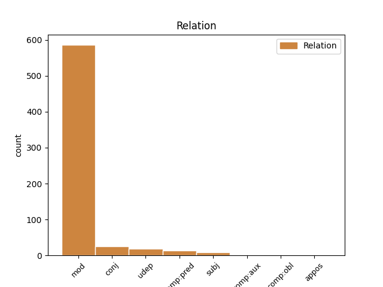
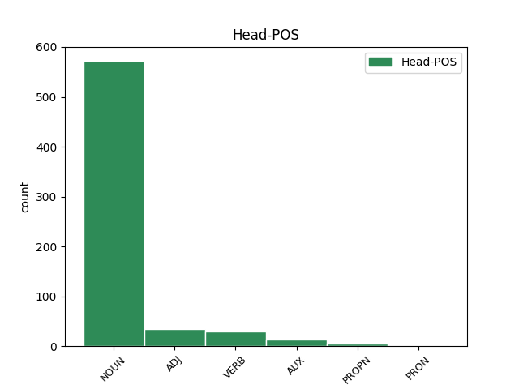
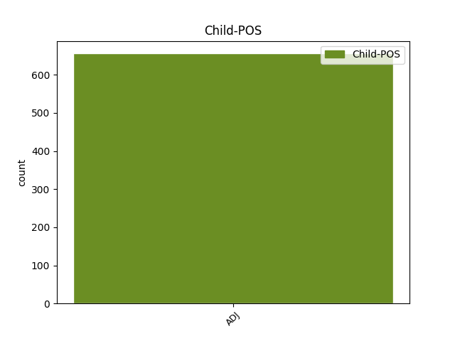

Distribution of features within this leaf



Agreement Rules sorted by frequency.
- When the dependent token is the modifer(mod) of the head token, and the dependent token is ADJ.
1 Ён _ _ _ _ 0 _ _ _
2 прыставаў _ _ _ _ 0 _ _ _
3 да _ _ _ _ 0 _ _ _
4 свайго _ _ _ _ 0 _ _ _
5 даўганогага _ _ _ _ 0 _ _ _
6 дзядзькі _ _ _ _ 0 _ _ _
7 Жырафа _ _ _ _ 0 _ _ _
8 і _ _ _ _ 0 _ _ _
9 пытаўся _ _ _ _ 0 _ _ _
10 , _ _ _ _ 0 _ _ _
11 чаму _ _ _ _ 0 _ _ _
12 ў _ _ _ _ 0 _ _ _
13 яго _ _ _ _ 0 _ _ _
14 на _ _ _ _ 0 _ _ _
15 скуры _ _ _ _ 0 _ _ _
16 плямы _ _ _ _ 0 _ _ _
17 , _ _ _ _ 0 _ _ _
18 і _ _ _ _ 0 _ _ _
19 высачэзны _ _ _ _ 0 _ _ _
20 дзядзька _ _ _ _ 0 _ _ _
21 Жыраф _ _ _ _ 0 _ _ _
22 даваў _ _ _ _ 0 _ _ _
23 яму _ _ _ _ 0 _ _ _
24 за _ _ _ _ 0 _ _ _
25 гэта _ _ _ _ 0 _ _ _
26 грымака _ _ _ _ 0 _ _ _
27 сваім _ _ _ _ 0 _ _ _
28 цвёрдым цвёрды ADJ DT Animacy=Inan|Case=Ins|Degree=Pos|Gender=Masc|Number=Sing 33 mod _ SpaceAfter=No
29 , _ _ _ _ 0 _ _ _
30 як _ _ _ _ 0 _ _ _
31 камень _ _ _ _ 0 _ _ _
32 , _ _ _ _ 0 _ _ _
33 капытом капыт NOUN NN Animacy=Inan|Case=Ins|Gender=Masc|Number=Sing 0 _ _ _
34 . _ _ _ _ 0 _ _ _
1 Некаторымі _ _ _ _ 0 _ _ _
2 з _ _ _ _ 0 _ _ _
3 іх _ _ _ _ 0 _ _ _
4 ён _ _ _ _ 0 _ _ _
5 карыстаўся _ _ _ _ 0 _ _ _
6 як _ _ _ _ 0 _ _ _
7 прыкрыццём _ _ _ _ 0 _ _ _
8 , _ _ _ _ 0 _ _ _
9 прынаджваючы _ _ _ _ 0 _ _ _
10 качак _ _ _ _ 0 _ _ _
11 , _ _ _ _ 0 _ _ _
12 і _ _ _ _ 0 _ _ _
13 зараз _ _ _ _ 0 _ _ _
14 , _ _ _ _ 0 _ _ _
15 калі _ _ _ _ 0 _ _ _
16 човен _ _ _ _ 0 _ _ _
17 выйшаў _ _ _ _ 0 _ _ _
18 на _ _ _ _ 0 _ _ _
19 адкрытую _ _ _ _ 0 _ _ _
20 ваду _ _ _ _ 0 _ _ _
21 , _ _ _ _ 0 _ _ _
22 з _ _ _ _ 0 _ _ _
23 іх _ _ _ _ 0 _ _ _
24 узнялася _ _ _ _ 0 _ _ _
25 хмара _ _ _ _ 0 _ _ _
26 чыркоў _ _ _ _ 0 _ _ _
27 , _ _ _ _ 0 _ _ _
28 крохаляў _ _ _ _ 0 _ _ _
29 , _ _ _ _ 0 _ _ _
30 чырвонагаловых чырвонагаловы ADJ DT Animacy=Anim|Case=Gen|Degree=Pos|Number=Plur 0 _ _ _
31 і _ _ _ _ 0 _ _ _
32 чарнакрылых чарнакрылы ADJ DT Animacy=Anim|Case=Gen|Degree=Pos|Number=Plur 30 conj _ _
33 дзікіх _ _ _ _ 0 _ _ _
34 качак _ _ _ _ 0 _ _ _
35 і _ _ _ _ 0 _ _ _
36 свістух _ _ _ _ 0 _ _ _
37 . _ _ _ _ 0 _ _ _
1 Чаму _ _ _ _ 0 _ _ _
2 аб'ёмы _ _ _ _ 0 _ _ _
3 падрыхтоўкi _ _ _ _ 0 _ _ _
4 спецыялiстаў _ _ _ _ 0 _ _ _
5 з _ _ _ _ 0 _ _ _
6 медыцынскай _ _ _ _ 0 _ _ _
7 адукацыяй _ _ _ _ 0 _ _ _
8 у _ _ _ _ 0 _ _ _
9 Беларусi _ _ _ _ 0 _ _ _
10 пастаянна _ _ _ _ 0 _ _ _
11 растуць _ _ _ _ 0 _ _ _
12 , _ _ _ _ 0 _ _ _
13 а _ _ _ _ 0 _ _ _
14 залатаць _ _ _ _ 0 _ _ _
15 " _ _ _ _ 0 _ _ _
16 прарэхi _ _ _ _ 0 _ _ _
17 " _ _ _ _ 0 _ _ _
18 ў _ _ _ _ 0 _ _ _
19 кадравым кадравы ADJ JJL Case=Loc|Degree=Pos|Gender=Neut|Number=Sing 20 udep _ _
20 забеспячэннi забеспячэннi NOUN RB Animacy=Inan|Case=Loc|Gender=Neut|Number=Sing 0 _ _ _
21 галiны _ _ _ _ 0 _ _ _
22 нiяк _ _ _ _ 0 _ _ _
23 не _ _ _ _ 0 _ _ _
24 ўдаецца _ _ _ _ 0 _ _ _
25 ? _ _ _ _ 0 _ _ _
1 Але _ _ _ _ 0 _ _ _
2 вось _ _ _ _ 0 _ _ _
3 у _ _ _ _ 0 _ _ _
4 той _ _ _ _ 0 _ _ _
5 самы _ _ _ _ 0 _ _ _
6 час _ _ _ _ 0 _ _ _
7 , _ _ _ _ 0 _ _ _
8 даўным-даўно _ _ _ _ 0 _ _ _
9 , _ _ _ _ 0 _ _ _
10 жыў _ _ _ _ 0 _ _ _
11 адзін _ _ _ _ 0 _ _ _
12 такі _ _ _ _ 0 _ _ _
13 Слон _ _ _ _ 0 _ _ _
14 , _ _ _ _ 0 _ _ _
15 або _ _ _ _ 0 _ _ _
16 , _ _ _ _ 0 _ _ _
17 лепш _ _ _ _ 0 _ _ _
18 сказаць _ _ _ _ 0 _ _ _
19 , _ _ _ _ 0 _ _ _
20 Слонік _ _ _ _ 0 _ _ _
21 , _ _ _ _ 0 _ _ _
22 які _ _ _ _ 0 _ _ _
23 быў быць AUX _ Aspect=Imp|Gender=Masc|Mood=Ind|Number=Sing|Tense=Past|VerbForm=Fin|Voice=Act 0 _ _ _
24 страшэнна _ _ _ _ 0 _ _ _
25 дапытлівы дапытлівы ADJ _ Case=Nom|Degree=Pos|Gender=Masc|Number=Sing 23 comp:pred _ SpaceAfter=No
26 , _ _ _ _ 0 _ _ _
27 і _ _ _ _ 0 _ _ _
28 каго _ _ _ _ 0 _ _ _
29 , _ _ _ _ 0 _ _ _
30 бывала _ _ _ _ 0 _ _ _
31 , _ _ _ _ 0 _ _ _
32 ні _ _ _ _ 0 _ _ _
33 ўбачыць _ _ _ _ 0 _ _ _
34 , _ _ _ _ 0 _ _ _
35 да _ _ _ _ 0 _ _ _
36 ўсіх _ _ _ _ 0 _ _ _
37 прыстае _ _ _ _ 0 _ _ _
38 з _ _ _ _ 0 _ _ _
39 роспытамі _ _ _ _ 0 _ _ _
40 . _ _ _ _ 0 _ _ _
1 У _ _ _ _ 0 _ _ _
2 інтэлектуальным _ _ _ _ 0 _ _ _
3 конкурсе _ _ _ _ 0 _ _ _
4 , _ _ _ _ 0 _ _ _
5 які _ _ _ _ 0 _ _ _
6 праходзіў _ _ _ _ 0 _ _ _
7 ў _ _ _ _ 0 _ _ _
8 фармаце _ _ _ _ 0 _ _ _
9 бліц-інтэрв’ю _ _ _ _ 0 _ _ _
10 , _ _ _ _ 0 _ _ _
11 кожная кожны ADJ _ Case=Nom|Degree=Pos|Gender=Fem|Number=Sing 15 subj _ _
12 з _ _ _ _ 0 _ _ _
13 дзяўчат _ _ _ _ 0 _ _ _
14 павінна _ _ _ _ 0 _ _ _
15 была быць AUX _ Aspect=Imp|Gender=Fem|Mood=Ind|Number=Sing|Tense=Past|VerbForm=Fin|Voice=Act 0 _ _ _
16 расказаць _ _ _ _ 0 _ _ _
17 , _ _ _ _ 0 _ _ _
18 якімі _ _ _ _ 0 _ _ _
19 яна _ _ _ _ 0 _ _ _
20 бачыць _ _ _ _ 0 _ _ _
21 навуковыя _ _ _ _ 0 _ _ _
22 дасягненні _ _ _ _ 0 _ _ _
23 Беларусі _ _ _ _ 0 _ _ _
24 ў _ _ _ _ 0 _ _ _
25 3017 _ _ _ _ 0 _ _ _
26 годзе _ _ _ _ 0 _ _ _
27 . _ _ _ _ 0 _ _ _
1 А _ _ _ _ 0 _ _ _
2 Сняжана _ _ _ _ 0 _ _ _
3 Міхейцава _ _ _ _ 0 _ _ _
4 з _ _ _ _ 0 _ _ _
5 Віцебскага _ _ _ _ 0 _ _ _
6 дзяржаўнага _ _ _ _ 0 _ _ _
7 тэхналагічнага _ _ _ _ 0 _ _ _
8 ўніверсітэта _ _ _ _ 0 _ _ _
9 марыць _ _ _ _ 0 _ _ _
10 аб _ _ _ _ 0 _ _ _
11 тым _ _ _ _ 0 _ _ _
12 , _ _ _ _ 0 _ _ _
13 каб _ _ _ _ 0 _ _ _
14 беларускія _ _ _ _ 0 _ _ _
15 вучоныя _ _ _ _ 0 _ _ _
16 вынайшлі _ _ _ _ 0 _ _ _
17 дамскую _ _ _ _ 0 _ _ _
18 сумачку _ _ _ _ 0 _ _ _
19 , _ _ _ _ 0 _ _ _
20 у _ _ _ _ 0 _ _ _
21 якой _ _ _ _ 0 _ _ _
22 усё _ _ _ _ 0 _ _ _
23 будзе быць AUX _ Aspect=Imp|Mood=Ind|Number=Sing|Person=3|Tense=Pres|VerbForm=Fin|Voice=Act 0 _ _ _
24 лёгка лёгкi ADJ _ Degree=Pos|Gender=Neut|Number=Sing|Variant=Short 23 comp:aux _ _
25 знайсці _ _ _ _ 0 _ _ _
26 пры _ _ _ _ 0 _ _ _
27 дапамозе _ _ _ _ 0 _ _ _
28 галасавых _ _ _ _ 0 _ _ _
29 каманд _ _ _ _ 0 _ _ _
30 , _ _ _ _ 0 _ _ _
31 і _ _ _ _ 0 _ _ _
32 мужчынскія _ _ _ _ 0 _ _ _
33 шкарпэткі _ _ _ _ 0 _ _ _
34 , _ _ _ _ 0 _ _ _
35 якія _ _ _ _ 0 _ _ _
36 самі _ _ _ _ 0 _ _ _
37 знаходзяць _ _ _ _ 0 _ _ _
38 сваю _ _ _ _ 0 _ _ _
39 пару _ _ _ _ 0 _ _ _
40 . _ _ _ _ 0 _ _ _
1 У _ _ _ _ 0 _ _ _
2 аўторак аўторак NOUN NN Animacy=Inan|Case=Acc|Gender=Masc|Number=Sing 0 _ _ _
3 , _ _ _ _ 0 _ _ _
4 20 20 ADJ ORD Case=Gen|Degree=Pos|Gender=Neut|Number=Sing 2 appos _ _
5 сакавіка _ _ _ _ 0 _ _ _
6 , _ _ _ _ 0 _ _ _
7 брытанская _ _ _ _ 0 _ _ _
8 газета _ _ _ _ 0 _ _ _
9 Daily _ _ _ _ 0 _ _ _
10 Telegraph _ _ _ _ 0 _ _ _
11 са _ _ _ _ 0 _ _ _
12 спасылкай _ _ _ _ 0 _ _ _
13 на _ _ _ _ 0 _ _ _
14 дыпламатычныя _ _ _ _ 0 _ _ _
15 крыніцы _ _ _ _ 0 _ _ _
16 паведаміла _ _ _ _ 0 _ _ _
17 , _ _ _ _ 0 _ _ _
18 што _ _ _ _ 0 _ _ _
19 кіраўнікі _ _ _ _ 0 _ _ _
20 МЗС _ _ _ _ 0 _ _ _
21 ЕС _ _ _ _ 0 _ _ _
22 , _ _ _ _ 0 _ _ _
23 у _ _ _ _ 0 _ _ _
24 прыватнасці _ _ _ _ 0 _ _ _
25 , _ _ _ _ 0 _ _ _
26 уключаць _ _ _ _ 0 _ _ _
27 у _ _ _ _ 0 _ _ _
28 " _ _ _ _ 0 _ _ _
29 чорны _ _ _ _ 0 _ _ _
30 спіс _ _ _ _ 0 _ _ _
31 " _ _ _ _ 0 _ _ _
32 Асму _ _ _ _ 0 _ _ _
33 Асад _ _ _ _ 0 _ _ _
34 , _ _ _ _ 0 _ _ _
35 жонку _ _ _ _ 0 _ _ _
36 прэзідэнта _ _ _ _ 0 _ _ _
37 краіны _ _ _ _ 0 _ _ _
38 Башара _ _ _ _ 0 _ _ _
39 Асада _ _ _ _ 0 _ _ _
40 . _ _ _ _ 0 _ _ _
Disagree Examples:
1 У _ _ _ _ 0 _ _ _
2 школе _ _ _ _ 0 _ _ _
3 нас _ _ _ _ 0 _ _ _
4 беларускай беларускі ADJ JJL Case=Dat|Degree=Pos|Gender=Fem|Number=Sing 5 comp:obl _ _
5 вучаць вучыць VERB VBC Aspect=Imp|Mood=Ind|Number=Plur|Person=3|Tense=Pres|VerbForm=Fin|Voice=Act 0 _ _ _
6 замала _ _ _ _ 0 _ _ _
7 ... _ _ _ _ 0 _ _ _
1 Мы _ _ _ _ 0 _ _ _
2 жывыя жывы ADJ JJL Case=Nom|Degree=Pos|Number=Plur 0 _ _ _
3 і _ _ _ _ 0 _ _ _
4 мова _ _ _ _ 0 _ _ _
5 жывая жывы ADJ JJL Case=Nom|Degree=Pos|Gender=Fem|Number=Sing 2 conj _ SpaceAfter=No
6 . _ _ _ _ 0 _ _ _
1 Беларускія _ _ _ _ 0 _ _ _
2 ўлады _ _ _ _ 0 _ _ _
3 маюць _ _ _ _ 0 _ _ _
4 намер _ _ _ _ 0 _ _ _
5 прывесці _ _ _ _ 0 _ _ _
6 паказчыкі _ _ _ _ 0 _ _ _
7 па _ _ _ _ 0 _ _ _
8 вонкавым вонкавы ADJ JJL Case=Loc|Degree=Pos|Number=Plur 9 mod _ _
9 абавязку абавязак NOUN NN Animacy=Inan|Case=Loc|Gender=Masc|Number=Sing 0 _ _ _
10 ў _ _ _ _ 0 _ _ _
11 адпаведнасць _ _ _ _ 0 _ _ _
12 з _ _ _ _ 0 _ _ _
13 метадалогіяй _ _ _ _ 0 _ _ _
14 Міжнароднага _ _ _ _ 0 _ _ _
15 валютнага _ _ _ _ 0 _ _ _
16 фонду _ _ _ _ 0 _ _ _
17 . _ _ _ _ 0 _ _ _
1 Акрамя _ _ _ _ 0 _ _ _
2 таго _ _ _ _ 0 _ _ _
3 , _ _ _ _ 0 _ _ _
4 план _ _ _ _ 0 _ _ _
5 уключае _ _ _ _ 0 _ _ _
6 разгляд _ _ _ _ 0 _ _ _
7 у _ _ _ _ 0 _ _ _
8 бягучым _ _ _ _ 0 _ _ _
9 годзе _ _ _ _ 0 _ _ _
10 магчымасці _ _ _ _ 0 _ _ _
11 вылучэння _ _ _ _ 0 _ _ _
12 ў _ _ _ _ 0 _ _ _
13 сістэме _ _ _ _ 0 _ _ _
14 аналізу _ _ _ _ 0 _ _ _
15 знешніх _ _ _ _ 0 _ _ _
16 абавязацельстваў _ _ _ _ 0 _ _ _
17 арганізацый _ _ _ _ 0 _ _ _
18 з _ _ _ _ 0 _ _ _
19 пераважнай _ _ _ _ 0 _ _ _
20 доляй _ _ _ _ 0 _ _ _
21 дзяржуласнасці _ _ _ _ 0 _ _ _
22 , _ _ _ _ 0 _ _ _
23 распрацоўку _ _ _ _ 0 _ _ _
24 ў _ _ _ _ 0 _ _ _
25 2012 2012 ADJ ORD Case=Loc|Degree=Pos|Gender=Masc|Number=Sing 28 mod _ SpaceAfter=No
26 - _ _ _ _ 0 _ _ _
27 2013 _ _ _ _ 0 _ _ _
28 гадах год NOUN NN Animacy=Inan|Case=Loc|Gender=Masc|Number=Plur 0 _ _ _
29 прапаноў _ _ _ _ 0 _ _ _
30 аб _ _ _ _ 0 _ _ _
31 формах _ _ _ _ 0 _ _ _
32 статыстычнай _ _ _ _ 0 _ _ _
33 справаздачнасці _ _ _ _ 0 _ _ _
34 па _ _ _ _ 0 _ _ _
35 ўліку _ _ _ _ 0 _ _ _
36 ВВД _ _ _ _ 0 _ _ _
37 ў _ _ _ _ 0 _ _ _
38 частцы _ _ _ _ 0 _ _ _
39 іншых _ _ _ _ 0 _ _ _
40 сектараў _ _ _ _ 0 _ _ _
41 для _ _ _ _ 0 _ _ _
42 павышэння _ _ _ _ 0 _ _ _
43 якасці _ _ _ _ 0 _ _ _
44 аналізу _ _ _ _ 0 _ _ _
45 ВВД _ _ _ _ 0 _ _ _
46 Беларусі _ _ _ _ 0 _ _ _
47 і _ _ _ _ 0 _ _ _
48 кіравання _ _ _ _ 0 _ _ _
49 ім _ _ _ _ 0 _ _ _
50 , _ _ _ _ 0 _ _ _
51 ўдасканаленне _ _ _ _ 0 _ _ _
52 ў _ _ _ _ 0 _ _ _
53 2011 _ _ _ _ 0 _ _ _
54 - _ _ _ _ 0 _ _ _
55 2012 _ _ _ _ 0 _ _ _
56 гадах _ _ _ _ 0 _ _ _
57 сістэмы _ _ _ _ 0 _ _ _
58 індыкатараў _ _ _ _ 0 _ _ _
59 паказчыкаў _ _ _ _ 0 _ _ _
60 ВВД _ _ _ _ 0 _ _ _
61 з _ _ _ _ 0 _ _ _
62 улікам _ _ _ _ 0 _ _ _
63 нацыянальных _ _ _ _ 0 _ _ _
64 асаблівасцяў _ _ _ _ 0 _ _ _
65 , _ _ _ _ 0 _ _ _
66 распрацоўку _ _ _ _ 0 _ _ _
67 дыферэнцыраваных _ _ _ _ 0 _ _ _
68 узроўняў _ _ _ _ 0 _ _ _
69 іх _ _ _ _ 0 _ _ _
70 крытычнасці _ _ _ _ 0 _ _ _
71 з _ _ _ _ 0 _ _ _
72 улікам _ _ _ _ 0 _ _ _
73 палітыкі _ _ _ _ 0 _ _ _
74 сацыяльна-эканамічнага _ _ _ _ 0 _ _ _
75 развіцця _ _ _ _ 0 _ _ _
76 краіны _ _ _ _ 0 _ _ _
77 . _ _ _ _ 0 _ _ _
1 Акрамя _ _ _ _ 0 _ _ _
2 таго _ _ _ _ 0 _ _ _
3 , _ _ _ _ 0 _ _ _
4 план _ _ _ _ 0 _ _ _
5 уключае _ _ _ _ 0 _ _ _
6 разгляд _ _ _ _ 0 _ _ _
7 у _ _ _ _ 0 _ _ _
8 бягучым _ _ _ _ 0 _ _ _
9 годзе _ _ _ _ 0 _ _ _
10 магчымасці _ _ _ _ 0 _ _ _
11 вылучэння _ _ _ _ 0 _ _ _
12 ў _ _ _ _ 0 _ _ _
13 сістэме _ _ _ _ 0 _ _ _
14 аналізу _ _ _ _ 0 _ _ _
15 знешніх _ _ _ _ 0 _ _ _
16 абавязацельстваў _ _ _ _ 0 _ _ _
17 арганізацый _ _ _ _ 0 _ _ _
18 з _ _ _ _ 0 _ _ _
19 пераважнай _ _ _ _ 0 _ _ _
20 доляй _ _ _ _ 0 _ _ _
21 дзяржуласнасці _ _ _ _ 0 _ _ _
22 , _ _ _ _ 0 _ _ _
23 распрацоўку _ _ _ _ 0 _ _ _
24 ў _ _ _ _ 0 _ _ _
25 2012 _ _ _ _ 0 _ _ _
26 - _ _ _ _ 0 _ _ _
27 2013 _ _ _ _ 0 _ _ _
28 гадах _ _ _ _ 0 _ _ _
29 прапаноў _ _ _ _ 0 _ _ _
30 аб _ _ _ _ 0 _ _ _
31 формах _ _ _ _ 0 _ _ _
32 статыстычнай _ _ _ _ 0 _ _ _
33 справаздачнасці _ _ _ _ 0 _ _ _
34 па _ _ _ _ 0 _ _ _
35 ўліку _ _ _ _ 0 _ _ _
36 ВВД _ _ _ _ 0 _ _ _
37 ў _ _ _ _ 0 _ _ _
38 частцы _ _ _ _ 0 _ _ _
39 іншых _ _ _ _ 0 _ _ _
40 сектараў _ _ _ _ 0 _ _ _
41 для _ _ _ _ 0 _ _ _
42 павышэння _ _ _ _ 0 _ _ _
43 якасці _ _ _ _ 0 _ _ _
44 аналізу _ _ _ _ 0 _ _ _
45 ВВД _ _ _ _ 0 _ _ _
46 Беларусі _ _ _ _ 0 _ _ _
47 і _ _ _ _ 0 _ _ _
48 кіравання _ _ _ _ 0 _ _ _
49 ім _ _ _ _ 0 _ _ _
50 , _ _ _ _ 0 _ _ _
51 ўдасканаленне _ _ _ _ 0 _ _ _
52 ў _ _ _ _ 0 _ _ _
53 2011 2011 ADJ ORD Case=Loc|Degree=Pos|Gender=Masc|Number=Sing 56 mod _ SpaceAfter=No
54 - _ _ _ _ 0 _ _ _
55 2012 _ _ _ _ 0 _ _ _
56 гадах год NOUN NN Animacy=Inan|Case=Loc|Gender=Masc|Number=Plur 0 _ _ _
57 сістэмы _ _ _ _ 0 _ _ _
58 індыкатараў _ _ _ _ 0 _ _ _
59 паказчыкаў _ _ _ _ 0 _ _ _
60 ВВД _ _ _ _ 0 _ _ _
61 з _ _ _ _ 0 _ _ _
62 улікам _ _ _ _ 0 _ _ _
63 нацыянальных _ _ _ _ 0 _ _ _
64 асаблівасцяў _ _ _ _ 0 _ _ _
65 , _ _ _ _ 0 _ _ _
66 распрацоўку _ _ _ _ 0 _ _ _
67 дыферэнцыраваных _ _ _ _ 0 _ _ _
68 узроўняў _ _ _ _ 0 _ _ _
69 іх _ _ _ _ 0 _ _ _
70 крытычнасці _ _ _ _ 0 _ _ _
71 з _ _ _ _ 0 _ _ _
72 улікам _ _ _ _ 0 _ _ _
73 палітыкі _ _ _ _ 0 _ _ _
74 сацыяльна-эканамічнага _ _ _ _ 0 _ _ _
75 развіцця _ _ _ _ 0 _ _ _
76 краіны _ _ _ _ 0 _ _ _
77 . _ _ _ _ 0 _ _ _